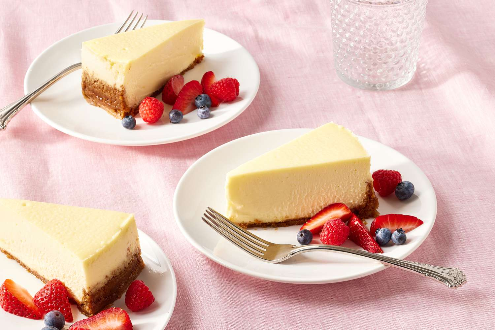

Cheesecake

The recipe of Classic Cheesecake
The perfect classic cheesecake is rich, not too dense, silky smooth, and as creamy as can be. Our recipe combines a handful of simple ingredients to make a satisfying dessert that everyone loves. You could serve this cheesecake as is for celebrations of any kind, but if you want to go the extra mile, try a drizzle of melted dark chocolate or a handful of fresh berries on top.
A buttery graham cracker crust makes this dessert an instant classic. The crumbly texture is a perfect complement to the velvety smooth cream cheese filling.
Cheesecake Ingredients
- Graham crackers
- Cream cheese
- Sugar
- Eggs
- Sour cream
- Lemon
Steps
- Preheat oven and make crust: Preheat oven to 375°F. Make crust: Butter a 9-by-3-inch springform pan. In a food processor, pulse graham crackers until fine crumbs form
- Add remaining crust ingredients and combine: Add melted butter, sugar, and salt, and pulse to combine.
- Press crust into pan: Press crumb mixture into bottom and about 1 inch up side of pan.
- Bake crust: Bake until set, 12 to 15 minutes; let cool on a wire rack. Reduce oven to 325°F.
- Boil water and make filling: Set a kettle of water to boil. Using an electric mixer, beat cream cheese on medium until fluffy, scraping down side of bowl.
- Add sugar: Gradually add sugar, beating until fluffy.
- Add lemon and salt: Beat in lemon zest and juice, and salt.
- Add eggs: Beat in eggs, one at a time, scraping down side of bowl after each addition.
- Add sour cream: Beat in sour cream.
- Prepare pan, add filling, and place in water bath: Wrap bottom half of pan in foil. Pour in filling; place pan in a roasting pan. Pour in boiling water to come halfway up side of springform.
- Bake: Bake until just set in center, about 1 3/4 hours. Remove pan from water bath; let cool 20 minutes.
- Cool, then refrigerate: Run a paring knife around edge; let cool completely. Cover; chill overnight before serving.